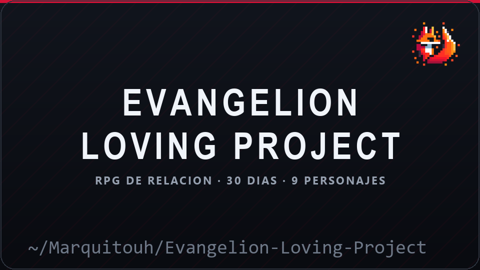
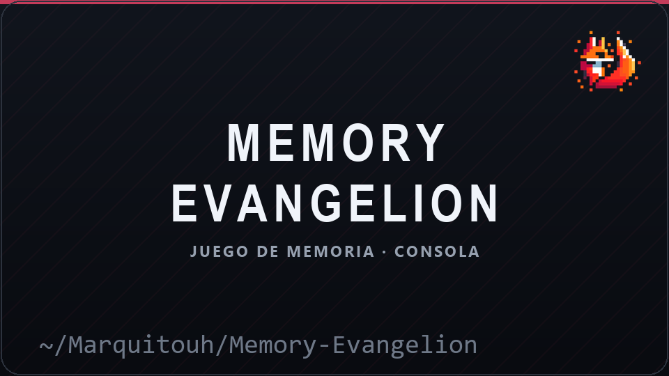
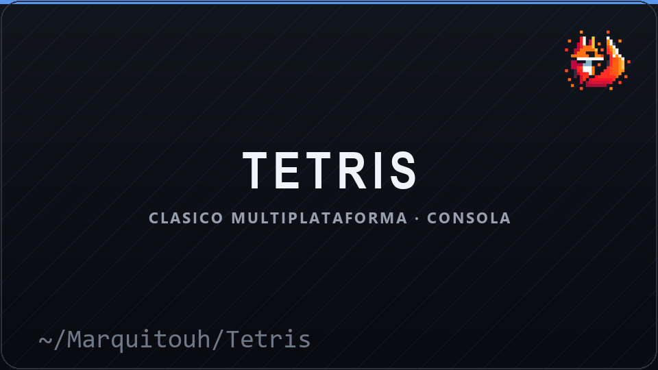
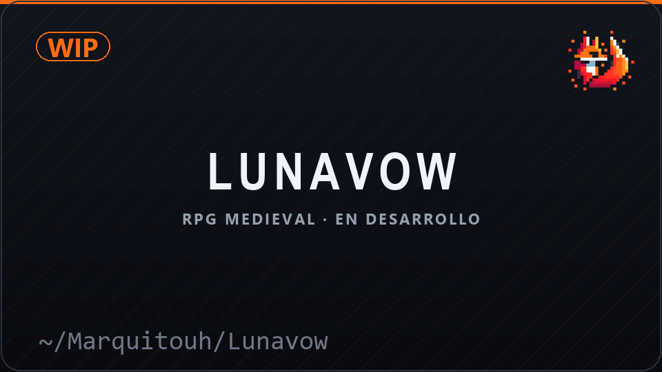

███╗ ███╗ █████╗ ██████╗ ██████╗ ██╗ ██╗██╗████████╗ ██████╗ ██╗ ██╗██╗ ██╗
████╗ ████║██╔══██╗██╔══██╗██╔═══██╗██║ ██║██║╚══██╔══╝██╔═══██╗██║ ██║██║ ██║
██╔████╔██║███████║██████╔╝██║ ██║██║ ██║██║ ██║ ██║ ██║██║ ██║███████║
██║╚██╔╝██║██╔══██║██╔══██╗██║▄▄ ██║██║ ██║██║ ██║ ██║ ██║██║ ██║██╔══██║
██║ ╚═╝ ██║██║ ██║██║ ██║╚██████╔╝╚██████╔╝██║ ██║ ╚██████╔╝╚██████╔╝██║ ██║
╚═╝ ╚═╝╚═╝ ╚═╝╚═╝ ╚═╝ ╚══▀▀═╝ ╚═════╝ ╚═╝ ╚═╝ ╚═════╝ ╚═════╝ ╚═╝ ╚═╝
Desarrollador de software y videojuegos · CEO de PixelFox Studios
Diseño de sistemas, herramientas internas y experiencias interactivas.
Simuladores, lógica algorítmica y la consola como lienzo, con nada más que C.
🧠 Sobre mí
Soy Marquitouh y programo desde Argentina. Empecé con juegos de consola escritos a mano en C —Tetris, Memory y un RPG de relaciones con los personajes de Evangelion— y de ahí me quedó la obsesión: que todo sea simple, portable y que se sienta bien en la pantalla.
Hoy estoy al frente de PixelFox Studios, donde me dedico al diseño de sistemas, las herramientas internas y las experiencias interactivas. Me gustan los proyectos donde la limitación técnica es el motor del diseño, no un obstáculo: hacer que un juego de consola en C tenga ritmo, que una herramienta sea realmente usable y que el código se pueda entender seis meses después.
Fuera del código, los videojuegos y el anime son parte del método. Casi todo lo que hago arranca con una pregunta narrativa y termina siendo un problema de lógica.
🕹️ Proyectos
|
 Misiones diarias, afinidad con 9 personajes, logros y partida guardada. 641 líneas de C
|
 El clásico de memoria por turnos, dibujado en consola. C
|
|
 Tablero 10×20, 7 piezas clásicas y controles WASD. Windows y POSIX en el mismo código
|
 RPG medieval con personajes antropomórficos y narrativa emocional. En desarrollo · sin repo público todavía
|
🦊 PixelFox Studios
PixelFox Studios es el estudio del que salen los juegos en C, el sitio web y este mismo perfil. Ahí se cocina todo: prototipos, utilidades internas y las experiencias interactivas que después se convierten en proyecto.
Me interesa especialmente el lado de las herramientas: scripts, automatizaciones y sistemas chicos que le ahorran horas a quien los usa.
🌐 Mi sitio

📊 GitHub
🛠️ Tecnologías
Lenguajes —
Áreas —
Herramientas —
📫 Contacto
"La creatividad nace cuando las limitaciones técnicas se transforman en oportunidades narrativas."